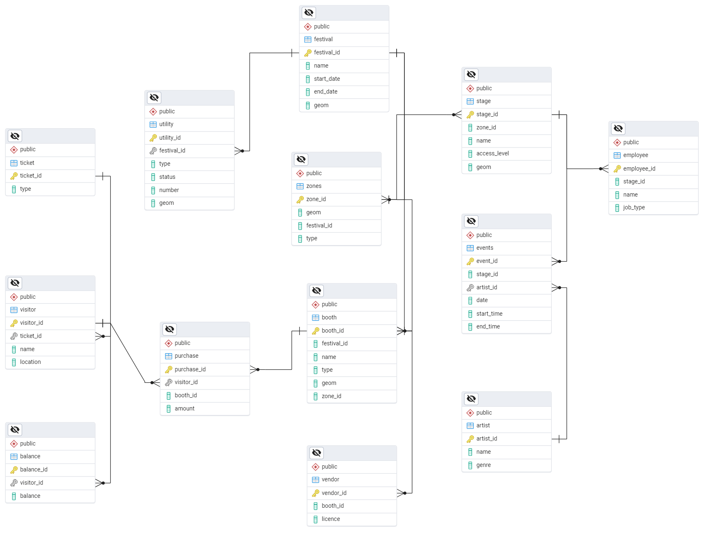
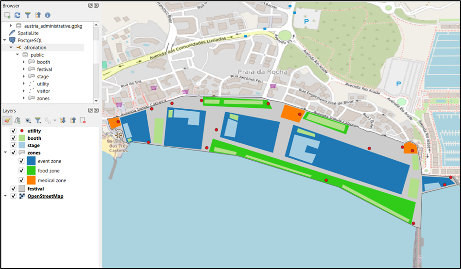
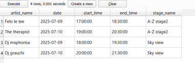
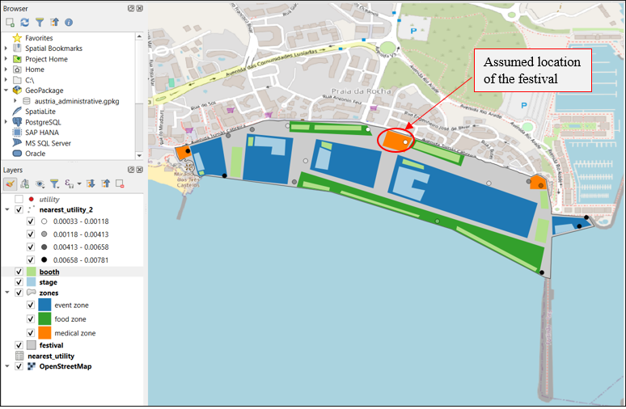
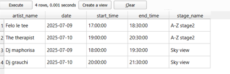
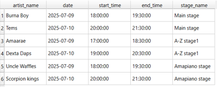

Design and Implementation of a Spatial Database
Introduction
As part of a fictional project for Vudstork Entertainment Ltd, the task was to develop a WebGIS backend to support a mobile app for a city festival. The app provides festival visitors with real-time information and allows organizers to distribute notifications and streamline their workflows. My role involved leveraging my Geoinformatics expertise to design and implement a spatial database, which forms the core of the app’s functionality, integrating various methods and software techniques learned during the semester.
Requirements
- Serve as database backend to organise the booths, roller coasters, tents etc. (Positions, opening times) as well as other facilities (garbage bins, toilets etc)
- User-specific, dynamic queries that return which events take place or facilities that are close to the current visitor’s position.
- User-specific and dynamic queries about the festival (digital maps, lists of events etc
ER Diagram
The ER diagram illustrates the main entities in the database design and their relationships.

Below is a summary of all tables
Festival – Central entity that links all other tables, storing details about the festival’s name, location, and dates.
Event Zones – Defines areas within the festival (e.g., food, medical, event zones), linking to stages, booths, and utilities.
Stage – Stores details of festival stages, defining location, access level, and zone affiliation.
Event – Links artists to stages, recording performance time slots and locations.
Artist – Stores artist details, linked to events and stages.
Booth – Represents vendor booths, specifying type, location, and zone.
Vendor – Links vendors to booths.
Utility – Stores details about facilities (e.g., toilets, medical points, garbage bins), linked to zones and festival areas.
Employees – Stores festival staff information, linking them to stages and assigned roles.
Visitor – Tracks festival attendees, linking them to ticket types.
Visitor Balance – Monitors a visitor’s remaining balance on their digital festival band.
Ticket – Stores ticket types (VIP, General Admission), defining visitor access levels.
Purchase – Tracks visitor purchases at booths, recording transaction amounts.
Database definition
Spatial tables including utilities, booths, stages, zones and the festival grounds, were created using QGIS and the shapefiles were then imported into a PostGIS database.

Non-spatial tables were defined in Postgres including events, artists, visitors employees , tickets etc .
--- non spatial tables
--- event table
CREATE TABLE events (
event_id INTEGER PRIMARY KEY,
stage_id INTEGER ,
artist_id INTEGER ,
date DATE,
start_time TIME WITHOUT TIME ZONE,
end_time TIME WITHOUT TIME ZONE,
FOREIGN KEY (stage_id) REFERENCES stage(stage_id),
FOREIGN KEY (artist_id) REFERENCES artist(artist_id)
);
--- vendor table
CREATE TABLE vendor (
vendor_id INTEGER PRIMARY KEY,
booth_id INTEGER,
licence CHARACTER VARYING,
FOREIGN KEY (booth_id) REFERENCES booth(booth_id)
);
--- artist table
CREATE TABLE artist (
artist_id INTEGER PRIMARY KEY,
name CHARACTER VARYING,
genre CHARACTER VARYING
);
--- employees table
CREATE TABLE employee (
employee_id INTEGER PRIMARY KEY,
stage_id INTEGER,
name CHARACTER VARYING,
job_type CHARACTER VARYING,
FOREIGN KEY (stage_id) REFERENCES stage(stage_id)
);
--- visitor table
CREATE TABLE visitor (
visitor_id INTEGER PRIMARY KEY,
ticket_id INTEGER,
name CHARACTER VARYING,
FOREIGN KEY (ticket_id) REFERENCES ticket(ticket_id)
);
--- vistor balance table
CREATE TABLE balance (
balance_id INTEGER PRIMARY KEY,
visitor_id INTEGER ,
balance FLOAT,
FOREIGN KEY (visitor_id) REFERENCES visitor(visitor_id)
);
--- ticket table
CREATE TABLE ticket (
ticket_id INTEGER PRIMARY KEY,
type CHARACTER VARYING CHECK (type IN ('VIP','General'))
);
--- purchase table
CREATE TABLE purchase (
purchase_id INTEGER PRIMARY KEY,
visitor_id INTEGER ,
booth_id INTEGER ,
amount FLOAT,
FOREIGN KEY (visitor_id) REFERENCES visitor(visitor_id),
FOREIGN KEY (booth_id) REFERENCES booth(booth_id)
);The database is normalized to Third Normal Form (3NF) to eliminate redundancy by having each table has a primary key that uniquely identifies records and all other attributes dependent on the full primary key and not the other non-primary keys.
Pseudo sample data was then inserted into the database for the corresponding tables.
--- Adding sample data to the table
--- 1. event table
INSERT INTO events (event_id, stage_id, artist_id, date, start_time, end_time)
VALUES
(1, 1, 1, '2025-07-09', '18:00', '19:30'),
(2, 1, 2, '2025-07-10', '20:00', '21:30'),
(3, 2, 3, '2025-07-09', '17:00', '18:30'),
(4, 2, 4, '2025-07-10', '19:00', '20:30'),
(5, 3, 5, '2025-07-09', '18:00', '19:30'),
(6, 3, 6, '2025-07-10', '20:00', '21:30'),
(7, 4, 7, '2025-07-09', '17:00', '18:30'),
(8, 4, 8, '2025-07-10', '19:00', '20:30'),
(9, 5, 9, '2025-07-09', '18:00', '19:30'),
(10, 5, 10, '2025-07-10', '20:00', '21:30');
--- 2. vendor table
INSERT INTO vendor (vendor_id, booth_id, licence)
VALUES
(10001, 1, 'FOOD-2025-001'),
(10002, 2, 'MERCH-2025-002'),
(10003, 10, 'GAMES-2025-003'),
(10004, 6, 'FOOD-2025-004'),
(10005, 3, 'MERCH-2025-005'),
(10006, 11, 'GAMES-2025-005'),
(10007, 7, 'FOOD-2025-005'),
(10008, 4, 'MERCH-2025-005'),
(10009, 9, 'FOOD-2025-005'),
(10010, 12, 'FOOD-2025-005');
--- 3. artist table
INSERT INTO artist (artist_id, name, genre)
VALUES
(1, 'Burna Boy', 'afrobeat'),
(2, 'Tems', 'afropop'),
(3, 'Amaarae', 'afropop'),
(4, 'Dexta Daps', 'reggae'),
(5, 'Uncle Waffles', 'amapiano'),
(6, 'Scorpion kings', 'amapiano'),
(7, 'Felo le tee', 'francophone'),
(8, 'The therapist', 'afrojazz'),
(9, 'Dj maphorisa', 'amapiano'),
(10, 'Dj grauchi', 'afrohouse');
--- 4. employees table
INSERT INTO employee (employee_id, stage_id, name, job_type)
VALUES
(1, 1, 'Lida Scay', 'Stage Manager'),
(2, 2, 'Benjy Scuttel', 'Vendor coordinator'),
(3, 3, 'Sofie Itshack', 'Medical'),
(4, 4, 'Brian Peckam', 'Ticketing'),
(5, 5, 'Hilary Cuttel', 'Security'),
(6, 1, 'Page Waterworth', 'Information desk'),
(7, 2, 'Alehandro Gustavo', 'Medical'),
(8, 3, 'Fidel Castro', 'Security'),
(9, 4, 'Bruno Patrice', 'Stage manager'),
(10, 5, 'Anitta Maxwin', 'Ticketing');
--- 5. ticket table
INSERT INTO ticket (ticket_id, type)
VALUES
(101, 'VIP'),
(102, 'General');
--- 6. visitor table
INSERT INTO visitor (visitor_id, ticket_id, name)
VALUES
(1001, 101, 'Gauthier Janko'),
(1002, 102, 'Seamus Ashford'),
(1003, 101, 'Gale Carsey'),
(1004, 102, 'Lynette Fahy'),
(1005, 101, 'Jamie Knudsen'),
(1006, 102, 'Sada Brittin'),
(1007, 101, 'Lucianno Epp'),
(1008, 102, 'Kiah Krishna'),
(1009, 101, 'Theo Olatunji'),
(1010, 102, 'Barry Allen');
--- 7. vistor balance table
INSERT INTO balance (balance_id, visitor_id, balance)
VALUES
(1, 1001, 99.14),
(2, 1002, 85.55),
(3, 1003, 28.41),
(4, 1004, 50.59),
(5, 1005, 11.60),
(6, 1006, 5.69),
(7, 1007, 105.42),
(8, 1008, 68.65),
(9, 1009, 70.36),
(10, 1010, 1.38);
--- 8. purchase table
INSERT INTO purchase (purchase_id, visitor_id, booth_id, amount)
VALUES
(1101, 1001, 1, 65.00),
(1102, 1002, 2, 7.50),
(1103, 1003, 3, 20.00),
(1104, 1004, 4, 5.25),
(1105, 1005, 5, 83.25),
(1106, 1006, 6, 64.67),
(1107, 1007, 7, 9.88),
(1108, 1008, 8, 89.11),
(1109, 1009, 9, 56.79),
(11010, 1005, 10, 15.00); Database Access and control
Role-based access was implemented
For database security, different roles were created for festival employees and visitors providing different levels of access. Each role has specific permissions granted based on their responsibilities. The roles included:
Visitor: Limited access to personal data and location tables only to view.
Stage Manager: full access to events table and limited access to stage and artist.
Vendor Coordinator: full access to vendor table and limited access to purchase and booth data.
Ticketing staff: limited access to ticket and visitor table
Security staff: limited access to stage, artist and events tables
--- Access control
--- create roles for individuals to access database
CREATE ROLE visitor WITH LOGIN PASSWORD 'ticket_id' VALID UNTIL '2025-07-11';
CREATE ROLE stage_manager WITH LOGIN PASSWORD 'M4u=ct)HB8Em';
CREATE ROLE vendor_coordinator WITH LOGIN PASSWORD 'u+}zmEn-P8`?sb';
CREATE ROLE ticketing_staff WITH LOGIN PASSWORD 'e2H-mtS+Fs(q' VALID UNTIL '2025-07-11';
CREATE ROLE security_staff WITH LOGIN PASSWORD 'ZL~hB+.E5GJ9/' VALID UNTIL '2025-07-11';
--- visitor access
GRANT SELECT ON
festival, zones, stage,events, artist, vendor, booth, utility
TO visitor;
--- stage manager access
GRANT SELECT, INSERT, UPDATE, DELETE ON events TO stage_manager;
GRANT SELECT ON artist, stage TO stage_manager;
--- vendor coordinator
GRANT SELECT, INSERT, UPDATE, DELETE ON vendor TO vendor_coordinator;
GRANT SELECT ON
purchase, balance
TO vendor_coordinator;
--- ticketing staff access
GRANT SELECT ON
visitor, ticket
TO ticketing_staff;
--- security staff access
GRANT SELECT ON
events, artist , stage
TO security_staff;Database Manipulation
Database Query examples:
List of events on the second day of festival. What are the events that are taking place on the second day of the festival including which stage and artists will perform?
What are the utilities near a festival goer? Assumption for this query is that the location if the festival goer is from a specific zone, ideally it should be real time location of visitor.
Identify access level visitor has based on ticket type.Which stages / events does a festival have access to? Example below is with one festival goer
--- Database Manipulation
--- 1. list of events plus artist and stage they perform at on a specific date i.e. 2nd day of the festival
SELECT
e.date,
e.start_time,
e.end_time,
s.name AS stage_name,
a.name AS artist_name
FROM events e
JOIN stage s ON e.stage_id = s.stage_id
JOIN artist a ON e.artist_id = a.artist_id
WHERE e.date = '2025-07-10';
--- 2. utilities near visitor location
SELECT
u.type AS utility_type,
u.status AS status,
u.number AS num_utility,
ST_Distance(
(SELECT ST_Centroid(z.geom) FROM zones z WHERE z.zone_id = 12),
u.geom
) AS distance_m,
u.geom
FROM utility u
WHERE ST_DWithin(
(SELECT ST_Centroid(z.geom) FROM zones z WHERE z.zone_id = 12),
u.geom, 100 -- Distance within 100 meters
);
--- 3. Identifying user access in specific stages and events
SELECT
a.name AS artist_name,
e.date,
e.start_time,
e.end_time,
s.name AS stage_name
FROM events e
JOIN stage s ON e.stage_id = s.stage_id
JOIN artist a ON e.artist_id = a.artist_id
JOIN visitor v ON v.visitor_id = 1002
WHERE s.access_level = (SELECT type FROM ticket WHERE ticket_id = v.ticket_id)
;Results:



